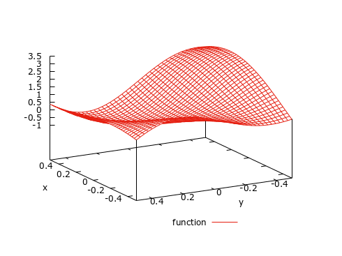
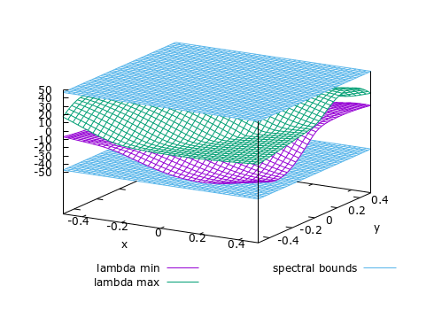

- Generated on for MC++ by
 1.15.0
1.15.0
|
MC++
|
Given a factorable, multivariate function \(f:\mathbb{R}^n\to\mathbb{R}\), that is twice-continuously differentiable on a box \(X:=[x^{\rm L},x^{\rm U}]\), Mönnigmann's technique [Mönnigmann, 2008; 2011] provides a means for computing spectral bounds of its Hessian matrix \(\nabla^2f(x)\) at any point \(x\in X\)—without actually computing \(\nabla^2f(x)\). Applications of this technique are in determining whether a function is convex or concave on a particular domain, as well as in constructing convex/concave relaxations for complete search approaches in global optimization. Alternative techniques for determining spectral bounds include the interval variant of Gershgorin's circle criterion [Adjiman et al., 1998] as well as Hertz & Rohn's method [Hertz, 1992], which rely on an interval enclosure of the set of all possible Hessian matrices \([\nabla^2f] \supseteq \{\nabla^2f(x) \mid x\in X\}\). See also McCormick Relaxation Arithmetic for Factorable Functions for an alternative way of constructing convex/concave relaxations.
The class mc::Specbnd provides an implementation of eigenvalue arithmetic. It relies on the operator/function overloading mechanism of C++, which makes the computation of spectral bounds both simple and intuitive, similar to computing function values in real arithmetics. Moreover, mc::Specbnd can be used as the template parameter of other available types in MC++; for instance, mc::Specbnd can be used in order to propagate spectral bounds on the remainder term of polynomial models in mc::TVar, mc::CVar or mc::SCVar. Likewise, mc::Specbnd can be used as the template parameter of the types fadbad::F, fadbad::B and fadbad::T of FADBAD++ for computing spectral bounds of either the partial derivatives or the Taylor coefficients of a factorable function too (see How do I compute spectral bounds of the partial derivatives or the Taylor coefficients of a factorable function using FADBAD++?).
mc:Specbnd is templated in the type used to propagate the necessary bounds. By default, mc::Specbnd can be used with the non-verified interval type mc::Interval of MC++. For reliability, however, it is strongly recommended to use verified interval arithmetic such as PROFIL (header file mcprofil.hpp), Boost Interval Arithmetic Library (header file mcboost.hpp) or FILIB++ (header file mcfilib.hpp). Other types, such as mc::McCormick, mc::TVar, mc::CVar or mc::SCVar, can also be used as template parameters of mc::Specbnd, thereby making it possible to compute, respectively, convex/concave bounds and polynomial inclusions of the spectrum of \(\nabla^2f\).
As well as propagating spectral bounds for factorable functions using Mönnigmann's technique, mc::Specbnd provides support for computing spectral bounds based on the interval Hessian matrix of a twice continuously-differentiable, factorable function using either Gershgorin's circle criterion or Hertz & Rohn's method. As established by Darup et al. [2012], the spectral bound arithmetic may or may not produce tighter spectral bounds than these latter techniques, depending on the factorable function \(f\) at hand and its variable range \(X\).
Results obtained for the factorable function \(f(x,y)=1+x-\sin(2x+3y)-\cos(3x-5y)\) for \(x\in [-0.5,0.5]^2\) are shown in the figure below. This function (red line) is shown in the left plot and the minimal and maximal eigenvalues (red and green lines) as well as the computed spectral bounds (blue line) of the Hessian matrix \(\nabla^2f\) are shown on the right plot.
 |  |
Suppose we want to compute a spectral (interval) bound for the Hessian matrix of the real-valued function \(f(x_1,x_2,x_3)=\exp(x_1-2x_2^2+3x_3^3)\) for \((x_1,x_2,x_3)\in [-0.3,0.2]\times[-0.1,0.6]\times[-0.4,0.5]\). For simplicity, this bound is calculated using the default interval type, mc::Interval:
First, the variables \(x_1\), \(x_2\) and \(x_3\) are defined as follows:
Essentially, the first line means that X1 is a variable of class mc::Specbnd, belongs to the interval \([-0.3,0.2]\), and having index 0 out of 3 independent variables (recall that indexing in C/C++ starts at 0 by convention!). The same holds for the mc::Specbnd variable X2 and X3.
Having defined the variables, spectral bounds on the Hessian matrix \(\nabla^2f\) of \(f\) on \([-0.3,0.2]\times[-0.1,0.6]\times[-0.4,0.5]\) are simply calculated as:
The computed spectral bounds can be retrieved as:
The function and first-derivative bounds can also be retrieved using mc::Specbnd::I and mc::Specbnd::FI. The results of the spectral bound propagation can be displayed to the standard output as:
which produces the following display:
Spectral bound (eigenvalue arithmetic): [ -1.99039e+01 : 3.70043e+01 ]
As noted earlier, other methods are available for bounding the spectrum of interval Hessian matrices, such as Gershgorin's circle criterion and Hertz & Rohn's method. mc::Specbnd also provides a means for computing these bounds, e.g. for comparison with the Mönnigmann's eigenvalue arithmetic. Interval Hessian matrices can be computed using the forward and/or reverse AD types of FADBAD++:
Then, in order to compute spectral bounds for \(f(x_1,x_2,x_3)=\exp(x_1-2x_2^2+3x_3^3)\) on \((x_1,x_2,x_3)\in [-0.3,0.2]\times[-0.1,0.6]\times[-0.4,0.5]\), we proceed as follows:
producing:
Spectral bound (Gershgorin, forward-forward): [ -2.63904e+01 : 3.85859e+01 ] Spectral bound (Hertz&Rohn, forward-forward): [ -2.11973e+01 : 3.05272e+01 ]
In this case, the eigenvalue arithmetic provides tighter bounds than with Gershgorin's circle criterion. Moreover, the lower bound is also tighter than with Herz & Rohn's method, yet the upper bound is weaker.
Spectral bounds for interval Hessian matrices generated with the forward-reverse mode of AD can also be computed:
producing:
Spectral bound (Gershgorin, forward-reverse): [ -2.63904e+01 : 3.85859e+01 ] Spectral bound (Hertz&Rohn, forward-reverse): [ -2.11973e+01 : 3.05272e+01 ]
In this case, the spectral bounds computed from the Hessian matrix obtained with the forward-forward and forward-reverse modes of AD are indeed identical, although such may not always be the case; see [Darup et al., 2012]
Instead of using standard interval arithmetic for propagating spectral bounds, we can as well make use of the McCormick relaxation technique to propagate convex/concave bounds. Using MC++, this is done simply by selecting mc::McCormick as the template parameter in mc::Specbnd:
Then, the procedure for computing a spectral bound remains essentially the same as described in the previous section. In order to compute convex/concave spectral relaxations and subgradients at point \((0,0,0)\) of \(f(x_1,x_2,x_3)=\exp(x_1-2x_2^2+3x_3^3)\) for \((x_1,x_2,x_3)\in [-0.3,0.2]\times[-0.1,0.6]\times[-0.4,0.5]\), we proceed as follows:
The only difference here concerns the initialization of the McCormick variables inside the variables X and Y, which passes the bounds for the variable as well as the point at which the convex/concave bounds and their subgradients are computed—See How do I compute McCormick relaxations of a factorable function?
More information on the spectral relaxations can again be obtained as:
which displays:
Spectral bound (eigenvalue arithmetic): [ -1.99039e+01 : 3.70043e+01 ] [ -1.54413e+01 : 2.81720e+01 ] [ (-9.27293e+00, 0.00000e+00,-5.21602e+00) : ( 1.72398e+01, 0.00000e+00, 1.50542e+01) ]
By construction, the interval bounds supporting the McCormick relaxations are identical to their spectral interval bound counterparts. The convex/concave bounds at \((0,0,0)\) come as additional information and are seen to be tighter than the interval bounds. The corresponding subgradients can also be used to construct affine relaxations.
A polynomial inclusion of the spectrum may be computed similarly by selecting mc::TVar, mc::CVar or mc::SCVar as the template parameter in mc::Specbnd.
mc::Specbnd overloads the usual functions exp, log, sqr, sqrt, pow, inv, cos, sin, tan, acos, asin, atan, cosh, sinh, tanh. The functions min, max, fabs, fstep and bstep are not overloaded in mc::Specbnd since they are not (twice) continuously differentiable.
The combination of mc::Specbnd with the classes fadbad::F, fadbad::B and fadbad::T of FADBAD++ to compute a spectral bound for the Hessian matrix of either the partial derivatives or the Taylor coefficients of a factorable function is essentially the same as with mc::McCormick (see How do I compute McCormick relaxations of the partial derivatives or the Taylor coefficients of a factorable function using FADBAD++?).
Next, we present the case of fadbad::F only. Continuing the previous example, spectral bounds of the partial derivatvies of \(f(x_1,x_2,x_3)=\exp(x_1-2x_2^2+3x_3^3)\) for \((x_1,x_2,x_3)\in [-0.3,0.2]\times[-0.1,0.6]\times[-0.4,0.5]\) can be computed as follows:
producing the output:
Spectral bounds of df/dx1: [ -1.99039e+01 : 3.70043e+01 ] Spectral bounds of df/dx2: [ -1.16096e+02 : 8.92716e+01 ] Spectral bounds of df/dx3: [ -1.28567e+02 : 2.06229e+02 ]
The class mc::Specbnd has a public static member called mc::Specbnd::options that can be used to set/modify the options; e.g.,
The available options are the following:
| Name | Type | Default | Description |
|---|---|---|---|
| HESSBND | mc::Specbnd::Options::HESSBND_STRATEGY | mc::Specbnd::Options::GERSHGORIN | Strategy for computing spectral bounds in interval Hessian matrix using mc::Specbnd::spectral_bound |
Errors are managed based on the exception handling mechanism of the C++ language. Each time an error is encountered, a class object of type mc::Specbnd::Exceptions is thrown, which contains the type of error. It is the user's responsibility to test whether an exception was thrown during the computation of a spectral bound, and then make the appropriate changes. Should an exception be thrown and not caught by the calling program, the execution will abort.
Possible errors encountered during the computation of a spectral bound are:
| Number | Description |
|---|---|
| 1 | Failed to compute spectrum in Specbnd::spectrum |
| 2 | Failed to compute spectral bound in Specbnd::spectral_bound |
| -1 | Operation between variables with different numbers of dependents |
| -33 | Feature not yet implemented in mc::Specbnd |
Moreover, exceptions may be thrown by the template parameter class itself.